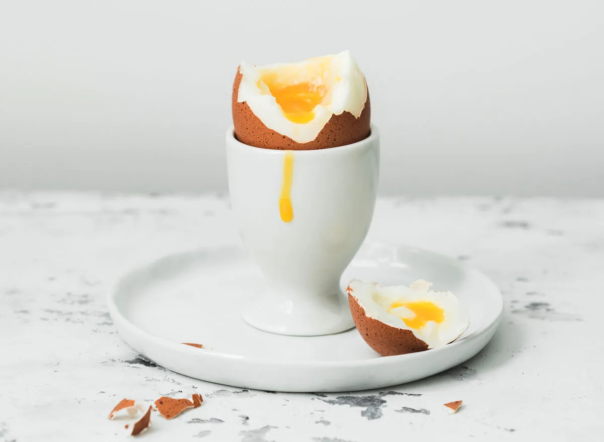

Ingredients
- 1 egg (or more, if you're in the mood...)
- Water (trust me, you need it to boil the egg)
- A pinch of salt (optional, for a touch of class)
Instructions
- Place the egg gently into a pot of water. Be careful — eggs don’t like surprises.
- Bring the water to a boil. (Hence the term boiled)
- Once boiling, reduce heat to a simmer and let it cook for 6 minutes. This is crucial for the perfect soft center (no pressure).
- Remove the egg and plunge it into ice water. It’s dramatic, but it gets the job done.
- After it cools, put it in an egg cup.
- Devour da egg.